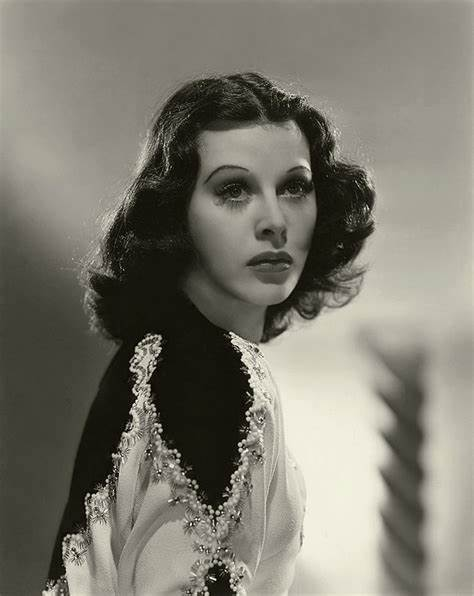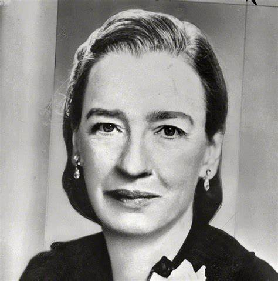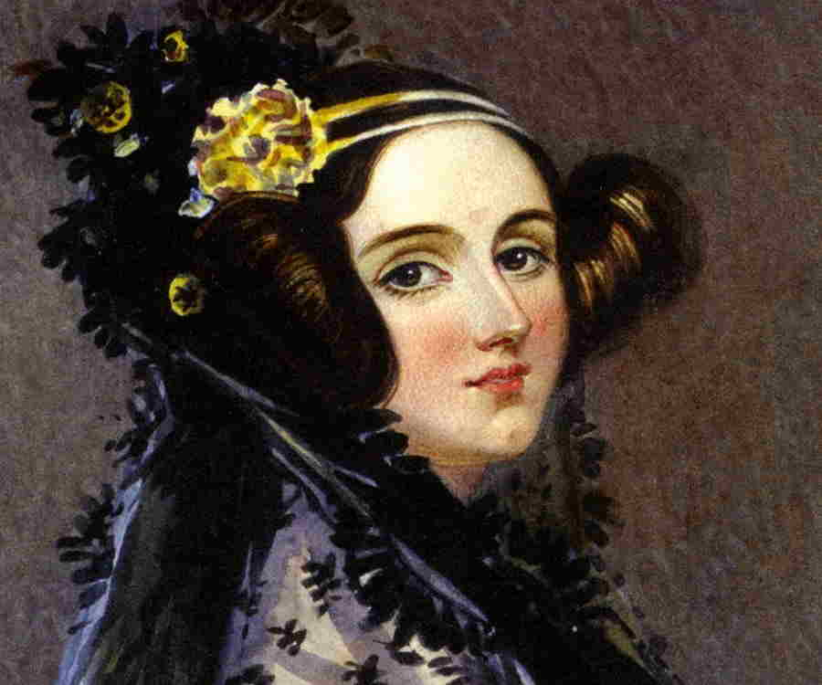 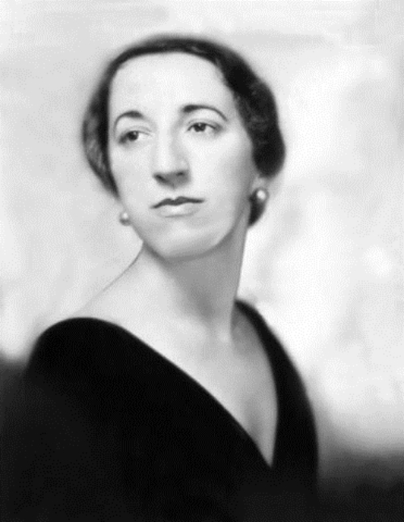
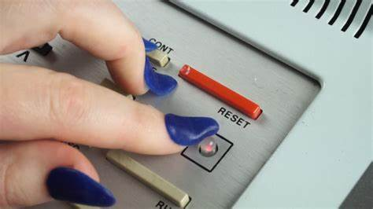
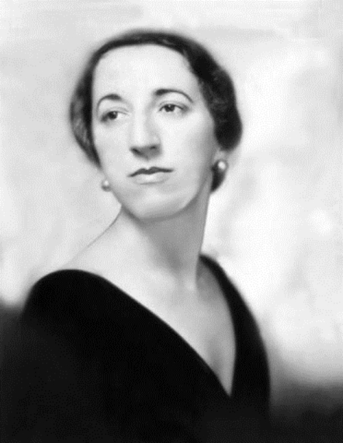
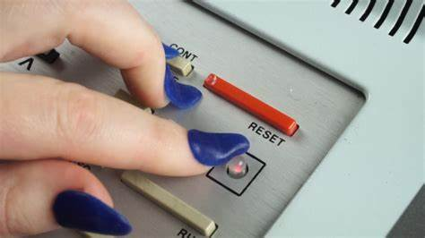
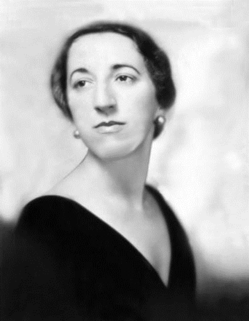
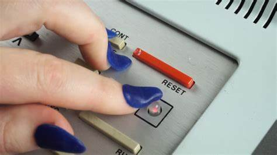
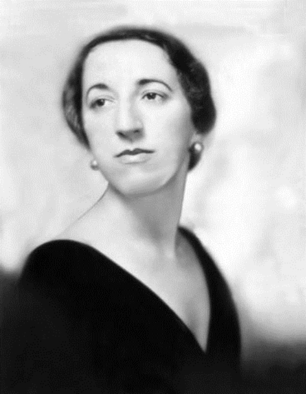
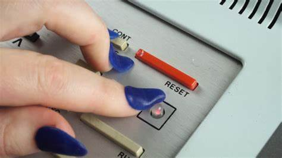Ada Lovelace est une figure majeure de la « préhistoire » informatique.
Née en 1815, la comtesse Lovelace, fille du poète anglais Lord Byron, est poussée par sa mère,
Annabella Milbanke, à étudier les mathématiques.
Douée dans ce domaine, elle fabrique l’ancêtre de l’ordinateur : la machine analytique, avec Charles Babbage.
Dans ses carnets, Ada Lovelace écrit les premières suites de calculs destinées à être exécutées par une machine.
Ce qui fait d’elle la première programmeuse du monde. Pionnière de l’informatique,
elle a conceptualisé le premier ordinateur un siècle avant son apparition.
Ada Lovelace laisse en héritage le langage informatique éponyme développé dans les années 1980 :
Hedy Lamarr en chiffres ça donne : trente films, le premier orgasme sur grand écran, six maris, une étoile sur le « Walk of Fame », mille vies et 88 fréquences…
Star à Hollywood, Hedy Lamarr est, avec son compagnon de l’époque, le compositeur George Antheil, à l’origine de la technique de « zapping » radio.
Calqué sur le nombre de touches d’un piano, ce système de communications novateur séquence l’information sur plusieurs fréquences entre l’émetteur et le récepteur.
Brevetée en 1941 - mais cédée très vite à l’armée américaine par patriotisme et utilisée vingt après pendant la crise de Cuba
- cette invention technologique est à l’origine du Wi-Fi, du GPS ou encore du Bluetooth.
Derrière l’un des premiers ordinateurs, la « Bombe », se cachait Alain Turing.
Derrière lui, se cachait Joan Clarke. La cryptologue britannique a participé au décryptage de la machine Enigma,
créée en 1919 par Arthur Scherbius, qui a été principalement utilisée par l’Allemagne nazie pour coder ses messages.
Pour décoder le chiffrement du IIIe Reich, l’équipe de Turing a inventé la machine nommée « The Bomb »
- d'après les bruits du tic-tac produit pendant les calculs. Ses travaux lui valent d’être décorée par le gouvernement britannique après la guerre.
En 2015, Joan Clarke est incarnée à l’écran par Keira Knightley dans le film Imitation Game.
Pendant la seconde guerre mondiale, l’armée américaine a sélectionné six mathématiciennes pour coder les instructions d’ENIAC (Electronic Numerical Integrator and Computer),
le premier ordinateur numérique totalement électronique.
Betty « Jean » Bartik, Betty Holberton, Marlyn Meltzer, Ruth Teitelbaum, Kay Mauchly Antonelli et Frances « Fran » Spence étaient chargées de programmer cette grosse machine de 25 mètres cubes
, 30 tonnes et 25 mètres de hauteur. Ces programmatrices d’élite étaient au cœur du projet ENIAC, et pourtant elles ont longtemps été oubliées. Les « ENIAC Girls »
accèdent tardivement à la postérité en 2013, lorsqu’un documentaire leur est consacré.
En 1997, Jean Bartik est décorée du prix des « pionniers en Informatique » pour ces contributions à l’avancée de l’informatique.
La brillante mathématicienne américaine, Grace Hopper a été témoin de la première panne informatique… provoquée par un insecte - « bug » en anglais.
En 1943, engagée dans la marine américaine, Grace Hopper travaille à la confection de l’ordinateur Harvard Mark I, qu’elle est la première à programmer.
Alors qu’elle travaille sur la version II, en 1945, elle découvre qu’une panne informatique est due à une mite prise dans un relais.
Très appliquée, Grace Hopper enlève avec soin l’insecte et le dépose dans son journal avec la mention suivante : « First actual case of bug being found »,
soit littéralement « Premier cas réel de découverte d'insecte ».
Cette anecdote a popularisé l’expression : « bug informatique ». Mais c'est surtout pour ses programmes à la pointe que Grace Hopper est surnommée « The queen of software » (1986), notamment le langage COBOL, devenu un standard pour les militaires et entreprises.
Un petit pas pour l’homme, un grand pas pour la femme ?
Quand le premier homme marchait sur la lune, une femme était aux commandes : Margaret Hamilton.
C’est son code informatique qui a permis le succès de la mission Apollo 13 en 1970 – car elle avait anticipé certaines pannes des composants électroniques et fait en sorte que la commande pour l’alunissage reste fonctionnelle.
Les logiciels étaient alors considérés comme moins importants.
L’ingénieure de la NASA raconte : « Quand j'ai commencé à parler d' «ingénierie logicielle», l'expression faisait souvent sourire.
C'était même une blague courante. […] Le développement logiciel a finalement et inévitablement acquis ses lettres de noblesse ».
En 2003, elle est décorée par la NASA avec un « Exceptionnal Space Act Award ».
En grande aventurière, Roberta Williams a designé Mystery House (1980), le premier jeu d'aventure graphique.
Vendu à grande échelle par l’entreprise Sierra On-Line, qu’elle co-fonde avec son époux Ken, une année avant.
Sa « gamographie » est impressionnante.
Roberta Williams a créé ou participé à plus de vingt jeux en dix-huit ans.
Entre autres, les joueurs lui doivent The Wizard, the Princess, the King’s Quest (du 1 au 8), Time Zone, Black Cauldron ou encore Dark Crystal.
Son travail de design et de scénario représente un tournant dans la conception du jeu d’aventure.
En véritable icône du jeu vidéo, elle pose nue dans un jacuzzi pour la couverture de SoftPorn Adventure.
« Une de ses grande fiertés », selon le site Ars Technica.
Chiffres clés en 2019 : où sont les femmes ?
Il y a 30 ans, les femmes occupaient environ 30 % des fonctions techniques des métiers du numérique
(développement, exploitation, production et gestion de projet).
Cette part a été divisée par deux depuis, et on retrouve désormais les femmes principalement au sein des fonctions support.
L’Opiiec résume parfaitement l’état des lieux actuel : les "femmes sont davantage présentes sur des fonctions supports et sous-représentées sur les cœurs de métier de la branche.
Elles sont également plus fréquemment positionnées sur des postes d’employés administratifs ou de secrétaires que sur des postes d’ingénieurs ou de techniciens."
Aujourd'hui, elles ne sont donc plus que 15 % en moyenne à s'engager dans des études d'informatique.
Une tendance observée partout dans l’Union Européenne : d'après "Women in the Digital Age", une récente étude réalisée pour la Commission européenne, trois fois plus d'hommes que de femmes travaillent dans le numérique en Europe.
Même constat dans la Silicon Valley, où l’on trouve peu de diversité.
Le manque de femmes dans le digital est un phénomène essentiellement occidental, comme le souligne Isabelle Collet, maître d'enseignement et de recherche à l'Université de Genève, spécialiste des questions de genre et d'éducation.